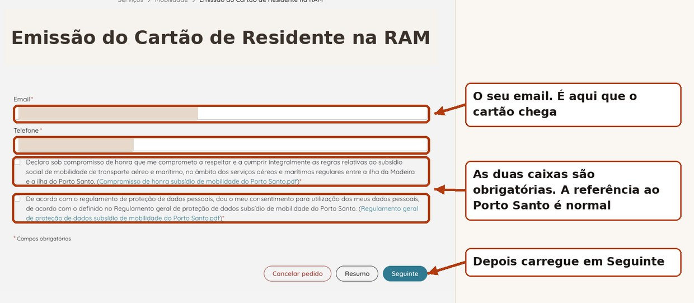
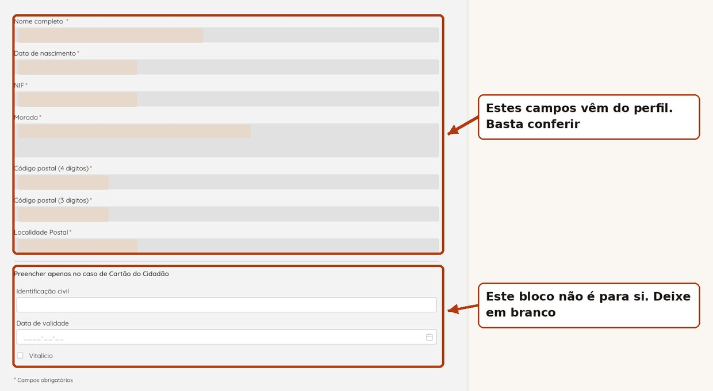
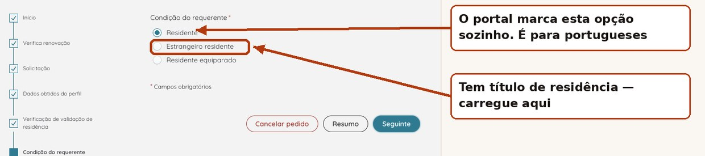
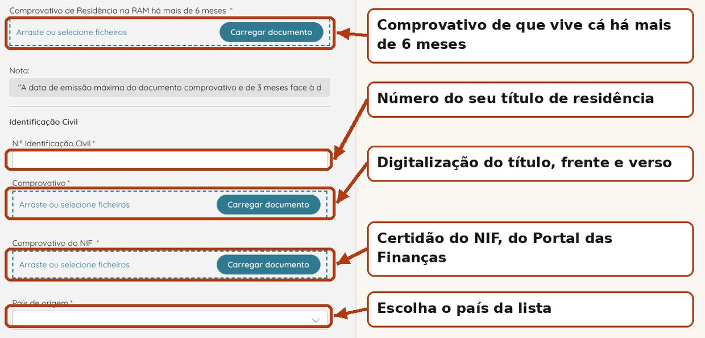
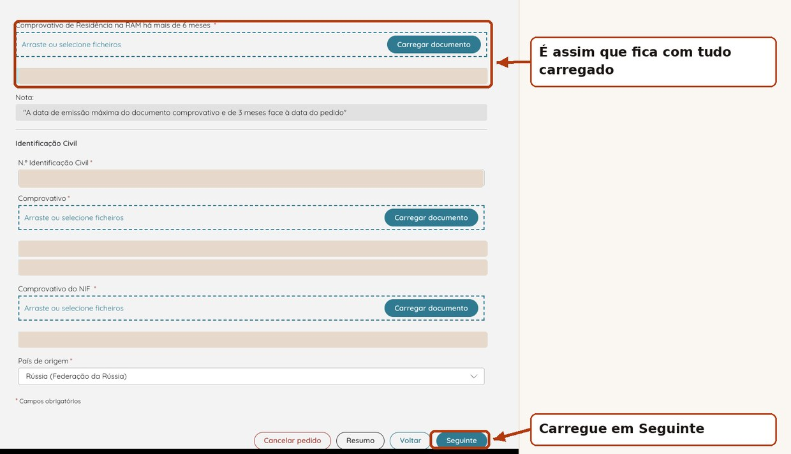
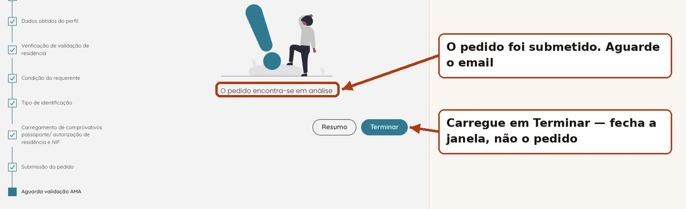

Done from home in 15 minutes. Below: every screen and where to click.
Apply for the card — step 1 of 8The resident card makes the ticket free — but you still have to book it in advance, for every walk. Without a booking the fine is the same as a tourist's.
That is how they manage the crowds on the levadas: the day is cut into 30-minute slots, from sunrise to sunset. Residents have their own quota of places, separate from tourists.
At the entrance you show three things: the ticket, the resident card and photo ID.
Open simplifica.madeira.gov.pt and sign in with your Chave Móvel Digital. The account is created on first login.
Open SIMplifica — the card serviceSection Mobilidade, service «Emissão do Cartão de Residente na RAM». The portal checks straight away whether you already hold a valid card.
Enter your email and phone number — the card arrives at that email. Below there are two boxes marked with an asterisk, both compulsory: a declaration of honour about the Porto Santo subsidy rules and consent to data processing. The Porto Santo wording commits you to nothing — the card was originally created for that subsidy.

Name, date of birth, NIF and address are pulled from your profile into grey fields you cannot edit. Just read them over. The block «Preencher apenas no caso de Cartão do Cidadão» is only for holders of a Portuguese Cartão de Cidadão. If that is not you, leave it empty and move on.

The portal preselects «Residente». That is for Portuguese citizens. If you are a foreigner with a residence permit, switch to «Estrangeiro residente». This is the main trap in the form: miss it and you go down the wrong branch. «Residente equiparado» is a rare case, for people treated as residents without being registered here.

Four fields: ID number, scan of the ID, proof of NIF and proof of living here for more than six months. Plus country of origin, picked from a list.

The obvious document is the atestado de residência from the Junta de Freguesia, which states how many years you have lived in the parish. It is valid for three months, costs a few euros and means a trip.
There is a way without the trip, and it worked: a tax domicile certificate from the Portal das Finanças plus a second document with an earlier date — an old AIMA receipt, a rental contract, a previous residence permit. Together they show both the address and the elapsed time. The application was approved without questions.
To be straight with you: this is one confirmed case, not a guarantee. With no earlier-dated document, go and get the atestado.

Press Seguinte and the status changes to «Aguarda validação AMA» — a real person reviews it. In our case: filed at 11:42, approved at 15:30 the same day. An email arrives, «Processo de validação de residência — Deferido», with a PDF certificate and a .pkpass file. Open the .pkpass on your phone and the card goes into your Wallet.

The service «Pagamento de Taxas para acesso aos Percursos Pedestres Classificados», on the same portal. Pick the trail, the date and a half-hour slot, then download the ticket. A resident pays nothing. Before setting out, check on the IFCN site whether the trail is open — they close often after rain. Entering a closed trail is a separate offence: a 250-euro fine, paid on the spot.
simplifica.madeira.gov.ptIgor Kartuzov, SeedWave. I went through this myself on 8 September 2026: filed at 11:42, card at 15:30. Every screen below is from my own application, with personal data painted over. Questions — find me on LinkedIn.